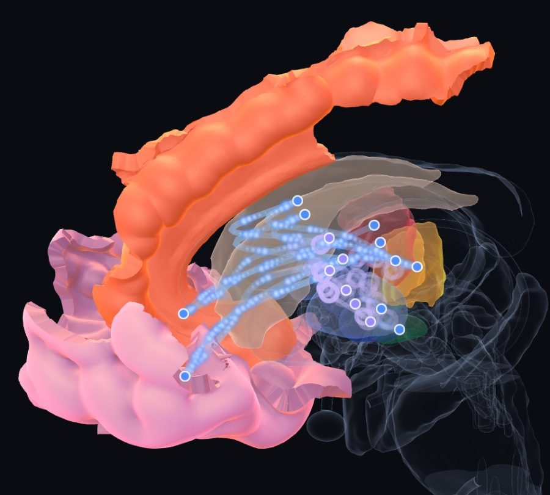
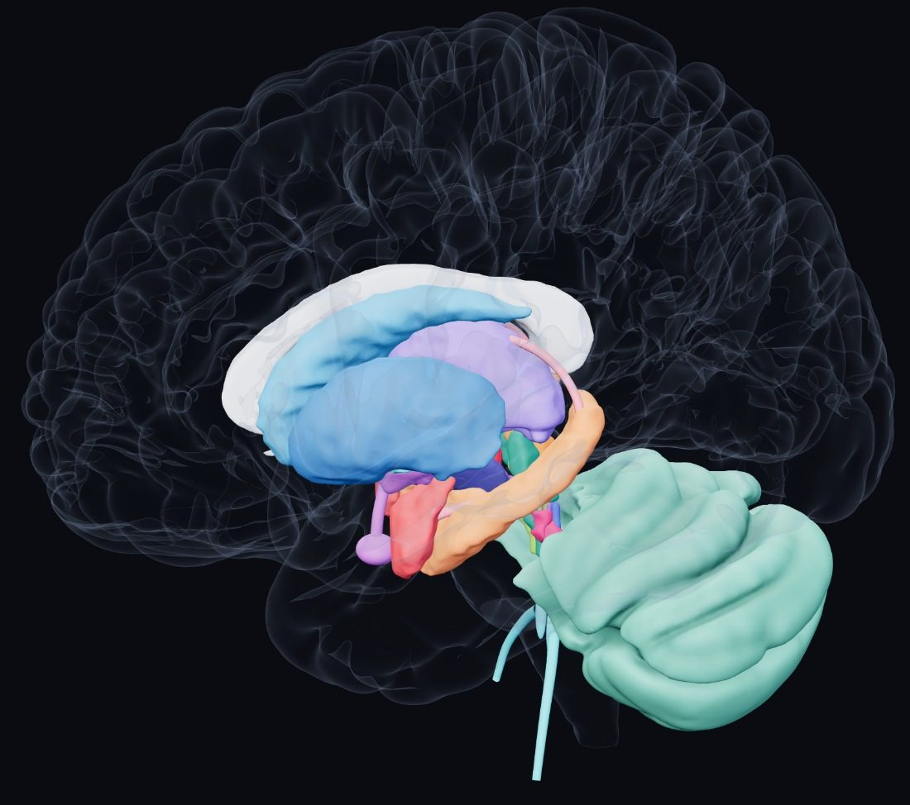
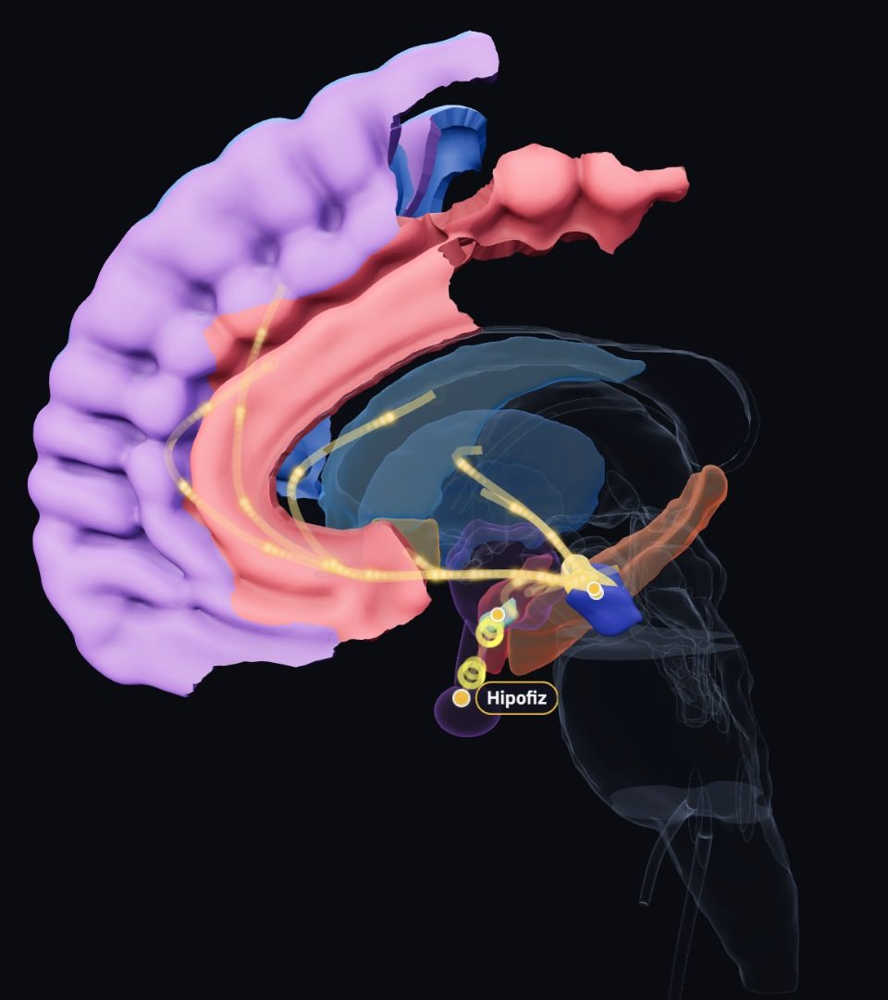
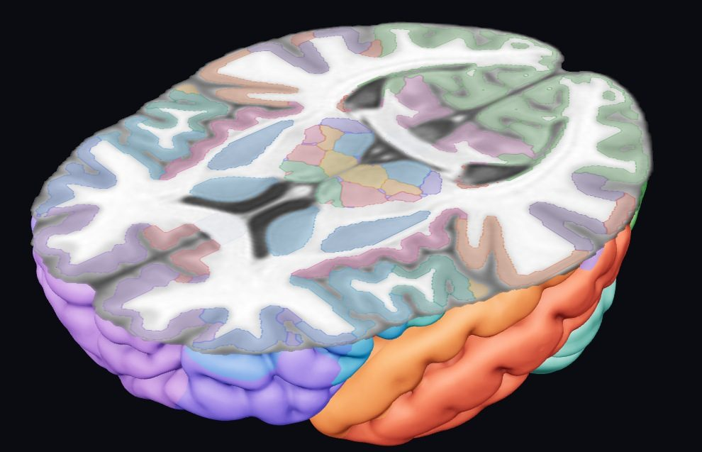

● Neuropsychiatry · neuroscience · neuropsychology
A map of the brain, in the language of the clinic.
Where the brain meets the mind: an interactive 3D atlas built from open MRI data, a library on brain structures and diagnoses, and a weekly newsletter that keeps a finger on the pulse of neuropsychiatry research worldwide.
Free · no sign-up · runs in the browser, nothing to install
- 104structures: 45 regions and 59 substructures
- 7Panksepp emotional systems with live circuits
- 8neurotransmitters’ pathways and 10 book pathways
- 8large-scale brain networks (Yeo 7 and multiple demand)
- 10diagnoses, with circuit, findings, symptom and treatment lenses
- 13medications: site of action, anatomy of side effects, children and adolescents
- 1mmaxial, coronal and sagittal MRI slices on the MNI template
The atlas
Touch a structure; everything else turns transparent and its card opens.
An anatomically precise 3D model, literature-backed cards, live pathways, diagnosis lenses and MRI slices on one screen. It runs in the browser; no sign-up, nothing to install.

01 · Diagnoses
Seeing a diagnosis in the brain
Ten diagnoses through four lenses: the circuit, findings from large studies, symptoms and where treatment acts; increased and reduced activity as a pulse.
Open in the atlas →
02 · Model
104 structures, layer by layer
Built from the MNI template and published atlases: HCP-MMP1.0 cortical borders, brainstem nuclei, thalamic nuclei and cerebellar lobules.
Open in the atlas →
03 · Live pathways
Emotional systems and neurotransmitters
Panksepp's seven emotional systems, eight neurotransmitters and the large-scale brain networks; signals flow in 3D, inhibitory signals as rings.
Open in the atlas →
04 · MRI slices
The same structure, in 3D and on MRI
Axial, coronal and sagittal slices of the template T1 image; region borders in color, and the slice plane cuts the 3D model too.
Open in the atlas →Library
For those looking for the theory
The atlas's knowledge as readable pages: every structure on its own page, every diagnosis with its circuits; emotional systems, neurotransmitter pathways and brain networks. Every item is referenced and marked with its level of evidence.
Brain regions
Each of 104 structures on its own page: anatomy, functions, development, clinical relevance, treatment.
Open the index →Psychopathology
Ten diagnoses, each with its circuits, networks, neurotransmitters and treatment.
Open the diagnoses →Emotional systems and pathways
Panksepp's seven systems, eight neurotransmitters and the book's main pathways.
Open in the library →Brain networks
Default mode, salience, executive control and the rest; what changes in which diagnosis.
Open in the library →Newsletter · weekly
Once a week: what is happening in brain and mind research?
Every week, four studies from the field's leading journals: three clinical, one from neuroscience. Each one short and clear, with its level of evidence and a link to the article.
- Psychiatry, child and adolescent mental health, neuroscience and neuropsychology
- Preprints that are not peer reviewed are clearly marked
- In Turkish and English
Subscribe
Four studies in your inbox every Friday. Free; unsubscribe anytime with one click.
Subscriptions are handled by Substack; how your email address is processed is on the legal page.
Community
For everyone curious about both brain and mind
A meeting place for people who love neuropsychiatry, neuroscience and neuropsychology: read, discuss, write.
Medical students
Neuroanatomy in three dimensions, together with function and the clinic; a quick review before exams.
Residents
In psychiatry, child psychiatry and neurology; the circuits targeted by medication and neuromodulation.
Psychologists and therapists
The neural counterparts of emotional systems, attachment and trauma; visuals for explaining them to clients.
Curious readers
A look at where and how emotions such as curiosity, fear, play and grief work in the brain.
What we are planning
Writing
Clinical notes, one structure through the atlas, and guest articles; every structure mentioned will open in the 3D atlas.
Academic
Publications, talks and posters; studies made with the atlas and its use in teaching.
Write with us
We welcome guest writers
Teachers, colleagues and anyone curious about the field: send us your idea for a short, referenced article or a summary of a new study. Every structure mentioned in a piece opens in the atlas with one click.

Created by
Alperen Mert Çetin, MD
Resident in child and adolescent psychiatry
Start exploring the brain
Works best in a desktop or tablet browser. The model downloads about 9 MB on first load.